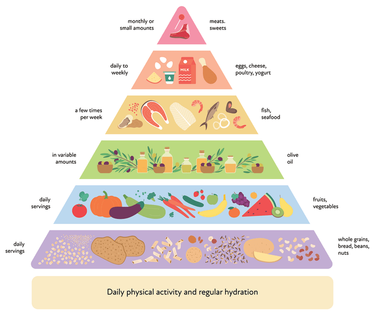
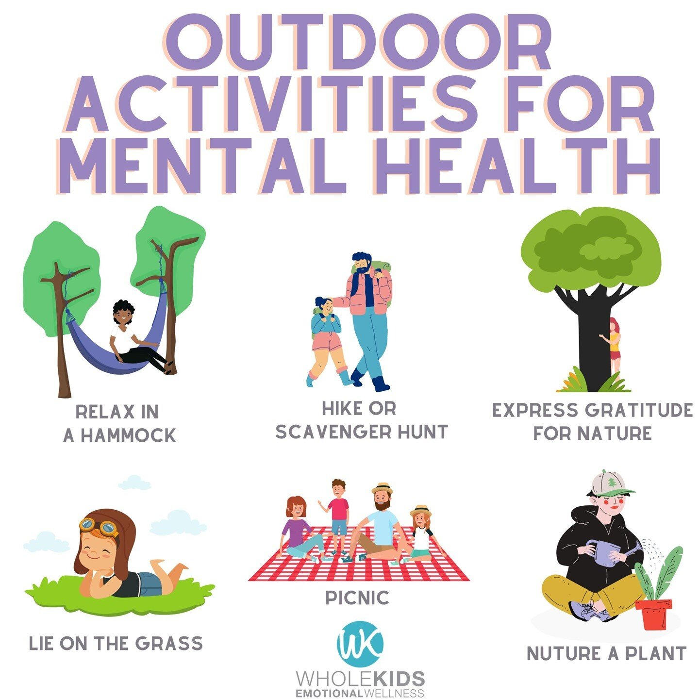

Health Categories
Nutrition
Eating a balanced diet rich in fruits, vegetables, and lean proteins is essential for maintaining good health and energy levels.
Exercise
Regular physical activity improves your strength, boosts mood, and helps manage weight effectively.
Sleep
Adequate sleep of 7-8 hours per night supports mental clarity and overall health.
Healthy Habit Images
 
Health Resources
Explore more about health and fitness:
Diet and Exercise Advice
- Drink plenty of water throughout the day.
- Incorporate 30 minutes of moderate exercise daily.
- Consume a variety of nutrient-dense foods.
- Limit processed and sugary foods.
- Get sufficient rest to recover and rejuvenate.
Training Plan
| Day | Activity | Duration |
|---|---|---|
| Monday | Cardio | 30 minutes |
| Tuesday | Strength Training | 45 minutes |
| Wednesday | Yoga | 1 hour |
| Thursday | Cardio | 20 minutes |
| Friday | Running | 30 minutes |